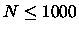
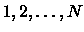
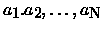

| Rails |
There is a famous railway station in PopPush City. Country there is incredibly hilly. The station was built in last century. Unfortunately, funds were extremely limited that time. It was possible to establish only a surface track. Moreover, it turned out that the station could be only a dead-end one (see picture) and due to lack of available space it could have only one track.
The local tradition is that every train arriving from the direction A continues in the direction B with coaches reorganized in some way. Assume that the train arriving from the direction A has  coaches numbered in increasing order . The chief for train reorganizations must know whether it is possible to marshal coaches continuing in the direction B so that their order will be . Help him and write a program that decides whether it is possible to get the required order of coaches. You can assume that single coaches can be disconnected from the train before they enter the station and that they can move themselves until they are on the track in the direction B. You can also suppose that at any time there can be located as many coaches as necessary in the station. But once a coach has entered the station it cannot return to the track in the direction A and also once it has left the station in the direction B it cannot return back to the station.
The last block consists of just one line containing 0.
5 1 2 3 4 5 5 4 1 2 3 0 6 6 5 4 3 2 1 0 0
Yes No Yes